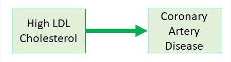
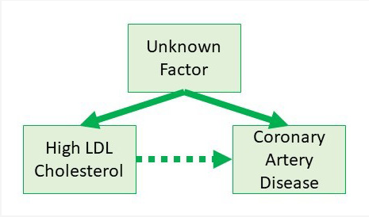
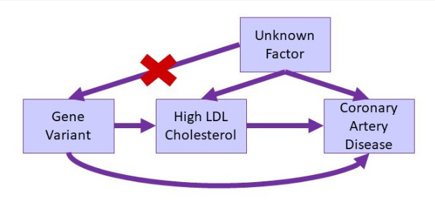
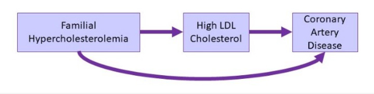
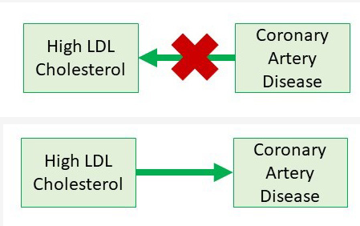

MR Using Genetics to Study Behaviors and Environments that Cause Disease
MR
Mendelian randomization studies examine how certain behaviors, environments, or other factors lead to specific health outcomes by looking at genetic differences that affect the way people’s bodies react to the behavior, environment, or other factor.
Why use Mendelian Randomization?
An important part of public health research is looking at whether behaviors, environments, and other factors, which can sometimes be changed, make people more likely to get certain diseases. However, showing that these factors cause a specific disease presents challenges.
In some studies, researchers compare people with and without a certain disease to look for behaviors, environments, and other factors that are linked to disease. In other studies, researchers compare health outcomes in people with and without a specific behavior, environment, or other factor to see if one group is more or less likely to develop a disease. The researchers are not able to control who has which behavior, environment, or other factor. Accurately measuring some behaviors, such as how much a person smokes or uses alcohol, can be difficult. In some cases, one factor is linked to other factors, and figuring out which one is the cause can be hard. For example, people who have higher alcohol use also tend to smoke more, so a link found between alcohol use and a health outcome might actually be due to smoking causing the outcome. Some factors can be present because of the disease itself, meaning that they are caused by the disease rather than leading to it. For example, as people get sick, they might tend to smoke less, so that decreased smoking might be associated with worsening of disease, even though in reality the decrease in smoking does not make the disease worse. These issues can mean that findings from one study are not repeated in later studies or that different studies can have findings that do not agree.
The gold standard for studying whether behavioral, environmental, or other factors cause disease is randomized controlled trials (RCTs). RCTs involve randomly assigning participants to one of two or more groups that differ by one factor. For example, those in a group either do or do not perform a certain behavior, are or are not exposed to a specific environmental factor, or do or do not receive a treatment. However, RCTs are costly, take a long time, and are not always possible due to ethical or other concerns, such as those related to assigning a group of people to perform an unhealthy behavior. RCTs are often used to confirm findings from other studies, and due to the cost of conducting RCTs, it is important to have the best evidence available from other study designs prior to starting an RCT. Mendelian randomization studies can help provide this evidence.
How does Mendelian Randomization work?
“Mendelian randomization” is based on the fact that every person randomly inherits one of the two versions of every gene that each of their parents has. Each genetic difference is inherited independently, meaning that one genetic difference a person inherits does not influence which other genetic differences they inherit. Mendelian randomization studies take advantage of this fact to look for links between health outcomes and genetic differences that have a similar effect as the randomly assigned behaviors, environments, or other factors in RCTs but are not subject to the influence of other factors. For example, a Mendelian randomization study could look at genetic differences that affect how people’s bodies break down a toxin that is thought to be linked to a disease. If people with the genetic difference that makes their bodies less able to break down the toxin show higher rates of disease, this provides evidence that the toxin causes the disease. This effect would only be seen for people exposed to the toxin, and the genetic difference would have no effect on disease risk in those not exposed to the toxin. Mendelian randomization can be used to look at whether levels of a substance found naturally in a person’s body is linked to disease. Measuring the levels themselves can be a problem because the levels can change in response to other factors that could be related to the disease, such as diet, smoking, or alcohol use. However, if genetic differences that affect the levels are linked to the disease, that provides evidence that the substance is related to the disease, as shown in the example for high cholesterol and heart disease (see textbox).
EXAMPLE: Mendelian Randomization Supports the Role of High Cholesterol and Heart Disease
Scientists observed that people with higher blood levels of low-density lipoprotein (LDL) cholesterol are more likely to have coronary artery disease. While this suggested that high blood LDL levels could lead to coronary artery disease, other explanations were possible.

For example, an unknown factor could cause both high LDL levels and make people more likely to develop coronary artery disease. This would make it seem like high LDL cholesterol levels caused coronary artery disease when the unknown factor was the actual cause.

Using a Mendelian randomization approach, scientists could look at genetic differences that affect LDL cholesterol levels to see if these variants make people more likely to develop coronary artery disease. The unknown factor would not influence which genetic difference is inherited.

For example, people with familial hypercholesterolemia have genetic changes that increase their blood levels of LDL cholesterol. These genetic changes are linked to an increased risk of coronary artery disease, which provides evidence that high LDL levels can cause heart disease.

These genetic changes are present from birth, before the development of coronary artery disease, providing evidence that high LDL levels lead to coronary artery disease, rather than coronary artery disease leading to high LDL.

Mendelian Randomization and Public Health
Mendelian randomization is one of many examples of how genetic approaches can help increase our understanding of the causes of disease. This approach has not been fully utilized in public health so far and finding genetic differences that result in effects similar to behaviors, environments, or other factors of interest can be challenging. In addition, showing that the genetic difference results in the health outcome through its effect on the behavior, environment, or other factor, not through a different pathway, can be challenging. Nonetheless, Mendelian randomization promises to be a helpful tool for future public health research.